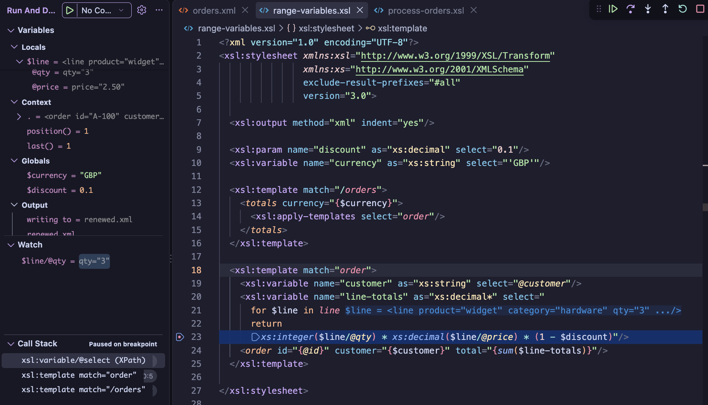

An XSLT editor for today
An XSLT editor used to be a large, separate application. Today it can be a free extension for the editor many developers already use all day. DeltaXignia's XSLT/XPath extension for Visual Studio Code is an XSLT editor first: it understands XSLT 3.0 and XPath 3.1, the XSLT 4.0 and XPath 4.0 features in Saxon 13, XSpec and Schematron, and it runs, debugs and profiles stylesheets with Saxon. VS Code is the host - and it brings Git, a terminal, themes and a large ecosystem with it.
Checks that understand XPath
The linter checks a stylesheet as you type, including the XPath inside attributes and text value templates: misspelled functions, wrong argument counts, undeclared variables, and the mistakes that otherwise only appear when a transformation runs. Quick fixes, completion for the XSLT in front of you and navigation - go to a declaration, find every reference, a call hierarchy - work across imports, includes and packages.
A debugger that steps into XPath
Set a breakpoint, run the stylesheet with SaxonJ - any edition, including Saxon-HE - and step through templates, functions and even the parts of a multi-line XPath expression, with the variables, the context item and the output written so far beside you. Step back as well as forward, and from the output go to the instruction that wrote it.

Stepping through an XPath expression in the debugger.
See the debugger in the user guide for the details.
Profile, then test
With Saxon-PE or Saxon-EE, the profiler shows the time of each template, function and global variable, with the times above the declarations in the editor. Then XSpec tests run from the Test Explorer, for stylesheets and for Schematron, with each failure's expected and actual results side by side.
XSLT 4.0 today
The extension supports the XSLT 4.0 and XPath 4.0 features that Saxon 13 implements, such as record types, enumerations and JNodes for JSON, with completion, checks and refactoring for them - so a stylesheet can use them now, with the same editor and the same tools.
Working with an AI assistant
An AI coding assistant is only as good as what it can see. The extension's MCP server gives assistants such as GitHub Copilot and Claude Code tools that use the same linter, Saxon setup and debugger as you do: they can check a stylesheet, find a declaration, try an XPath expression on your XML and run your stylesheet the way Quick Run does - so what an assistant writes is checked as it would be for you.
Try it
The extension is free. Install it from the Visual Studio Code Marketplace, open a folder with some stylesheets, and see the user guide for what to do next.